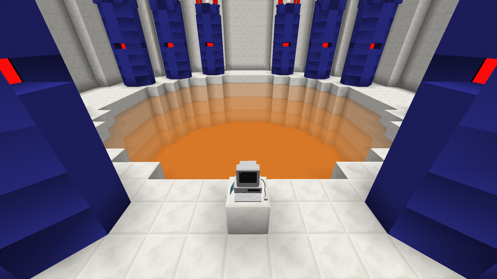

КСК (CSC - Core Science Corporation)
В северо-западной части Центрального района находится одна из крупнейших лабораторий острова, построенная рядом с вулканом - КСК.
Вид на территорию КСК
Лаборатория разделена на 3 сектора. В ней изучаются как обычные науки - физика, генетика и т.д. - так и аномальные.
Компания ведёт активную торговлю с другой лабораторной организацией - ТСК.
Коридор в Секторе 1
Адронный коллайдер
Экспериментальная печь алхимического синтеза
Коридор в Секторе 2
Лобби Сектора 3
Портал в Закулисье - передовая технология компании
Главная комната биотехнологического отдела

Машина времени локального действия

Комната запуска - путь к недрам вулкана
Вернуться на главную страницу